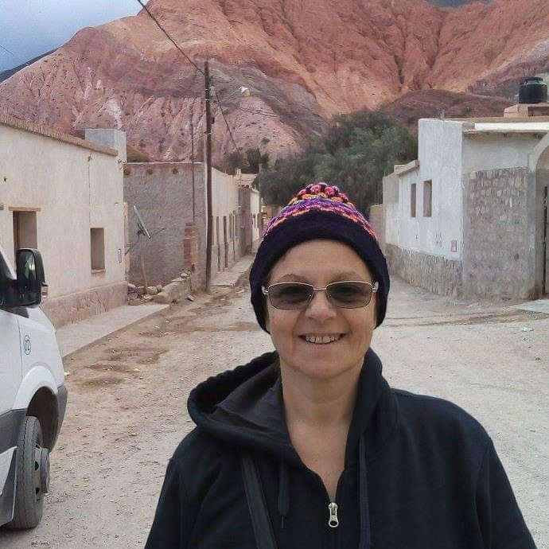

Curriculum Vitae

Información general
Nombre y apellido: Mónica Albiaque
E-mail: amonica1963@gmail.com
Teléfono: 1167072551
Ubicación actual: Buenos Aires- Argentina
|
✔ Experiencia
- UPEX - QATesting
- Análisis de User Story
- Diseño de Suite de Pruebas
- Diseño y derivación de Test Cases
- Connectis ICT Services - Soporte Sistemas Nivel 2
- Detección y escalamiento de incidentes
- Webservices Postman - SOAPUI
- Análisis causa raíz de los casos gestionados
- Relevamiento y documentación de Procesos.
- Contacto con los diferentes soportes relacionados
- Thales I.S. - Soporte Sistemas Nivel 1
- Gestión de incidencias/tickets en Remedy.
- Conciliaciones en Sistema Comercial y plataformas asociadas.
- Metodologías y procesos de Calidad
- Objetivos basados en cumplimiento de SLAs.
✔ Habilidades técnicas y tecnologías
SQL |
❤ |
❤ |
❤ |
❤ |
HTML |
❤ |
❤ |
❤ |
❤ |
| JAVASCRIPT |
❤ |
❤ |
❤ |
| REACT |
❤ |
❤ |
|
| NODE |
❤ |
❤ |
|
✔ Intereses
| AUTOMATION |
❤ |
❤ |
❤ |
❤ |
| SCRUM |
❤ |
❤ |
❤ |
| IA |
❤ |
❤ |
|
|